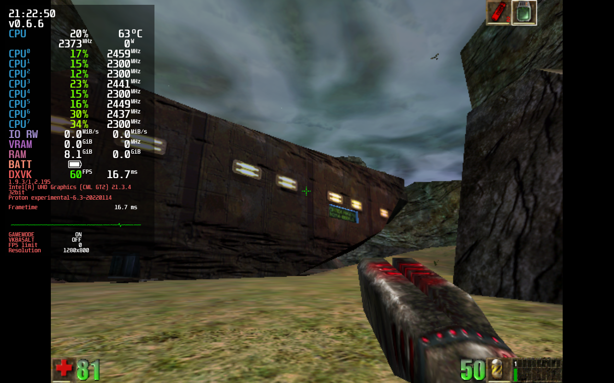

Important Information
General Information
- Intel's Mesa3D Linux drivers are dramatically unperformant compared to their Windows counterparts.
- Controller support works unless stated otherwise. The exception being Nintendo Switch Pro controllers because as of writing this, wired NS Pro Controllers cause most games in Proton to crash. This will not lower compatibility ratings because of the new HID driver coming in 5.16.
- These notes target SteamOS 3.0 for Steam Deck. I will not be using Lutris.
- Games not scaling to 16:10 isn't a huge enough issue to warrant lowering the rating.
Game Compatibility Notes
Game compatibility will be testing for: - Tinkering - Stability - Controllers - 1280x800 - Performance - Other flaws
Compatibility Rating Scale
Platinum: Game works perfectly out of the box
Gold: Game works but a little bit of tinkering will be needed
Silver: Game needs a lot of tinkering to be playable, and might not even be pefect
Bronze: Game has issues that prevent comfortable play, even with tinkering
Borked: Game is outright broken
Anticheat: Game is screwed because devs don't bother updating Anticheat.
System Specifications
CPU: Intel Core i7-10510U @ 1.8GHz
GPU: Mesa Intel CometLake-U GT2 (UHD Graphics)
RAM: 16GB
Distro: EndeavourOS Linux, Manjaro Linux, Garuda Linux
Game Compatibility
Celeste
Native
Technology: FNA/XNA, OpenGL
Controller support: Perfect
Notes:
- See XNA/FNA.
- Doesn't scale to 16:10


DUSK
Native
Technology: Unity, OpenGL (Vulkan optional)
Controller support: Imperfect
Notes:
- Triggers will need to be forced to mouse in Steam Input
- Ctrl and Shift need to be forced in Steam Input
- -force-vulkan can be used to force Vulkan

Rivals of Aether
Proton (Any modern version)
Technology: GameMaker: Studio, Direct3D
Controller support: Perfect
Notes:
- Doesn't scale to 16:10

ULTRAKILL
Proton (Any modern version)
Technology: Unity, Direct3D
Controller support: None (Steam Input works Great!)
Notes:
- Create a Steam Input controller profile, it works great!

Mutant Mudds Deluxe
Proton (Any modern version)
Technology: Unknown, Direct3D
Controller support: Imperfect
Notes:
- Window will always shrink when in windowed mode, doesn't occur in Proton-4.11
- Game requires that you set controls to controller manually.

Dust: An Elysian Tail
Native
Technology: XNA/FNA, OpenGL
Controller support: Perfect
Notes:
- See XNA/FNA.

LEGO Star Wars: The Complete Saga
Proton (Any modern version)
Technology: Nu2, Direct3D
Controller support: Perfect
Notes:
- None!

Unreal Gold
Proton (GloriousEggroll)
Technology: Unreal (1998), Direct3D+3dfx
Controller support: None (Steam Input works great!)
Notes:
- Using any mainline Proton causes colors to be reduced
- No working controller support, use Steam Input

HROT
Proton (Use 5.0)
Technology: Custom, OpenGL
Controller support: Borked
Notes:
- Any Proton version > 5.0 causes awful performance.
- You must download this OpenAL32.dll file and replace the game's dll to fix audio.
- Steam Overlay doesn't work, causing controllers to be totally borked. Fixed with Gamescope.


DOOM 64
!!!INCOMPLETE!!!
Proton (Any modern version)
Technology: KEX, D3D+Vulkan+OpenGL
Controller support: Perfect
Notes:
- None...?

Technology Compatibility
XNA/FNA
- Many XNA games will use FNA for ports
- Many XNA games have issues with the Steam Overlay. This is fixable with gamescope but gamescope is jank
- FNA games have issues with screen tearing, thanks Xorg.